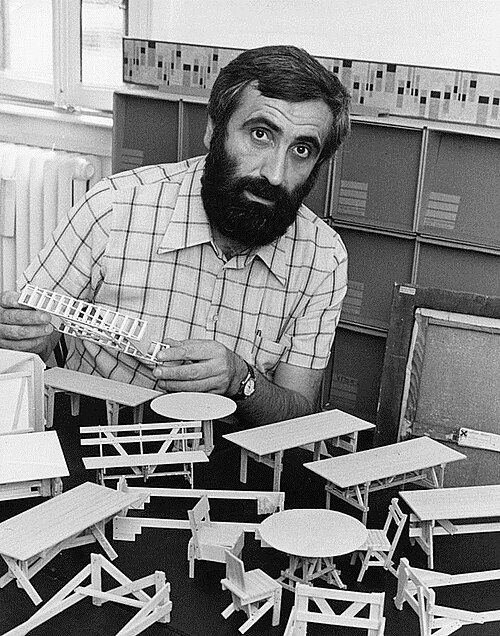

About Enzo Mari

Enzo Mari (1932-2020) was an Italian designer, artist, and educator known for his radical approach to design. As a lifelong communist, Mari’s political beliefs were central to his work.
Early life and education
Born in Novara, Italy, in 1932, Enzo Mari was raised in working-class poverty. He left school early to take odd jobs and support his family, later enrolling at the state-run Brera Academy in Milan in 1952 without a high school diploma.
After studying to become an artist at the Brera Academy, Mari gravitated towards industrial design, creating over 2,000 works over the course of his life.
Autoprogettazione
Mari created an ongoing project titled Autoprogettazione (loosely translated to self-made), where he provided free step-by-step guides so that people could build their own furniture from simple, egalitarian materials like plywood and nails. As an educator, he encouraged his students to “decondition people from the god of merchandise”. To learn more about his Autoprogettazione project, click here.
Legacy
Upon his death, his archive was donated to the city of Milan, where Mari lived and worked for most of his life. The archive contains work from over 1,500 projects, including artworks, technical drawings, books, models, etc. However, per the will of Enzo Mari himself, these works will not be on display until the year 2060, once 40 years have passed since his death.